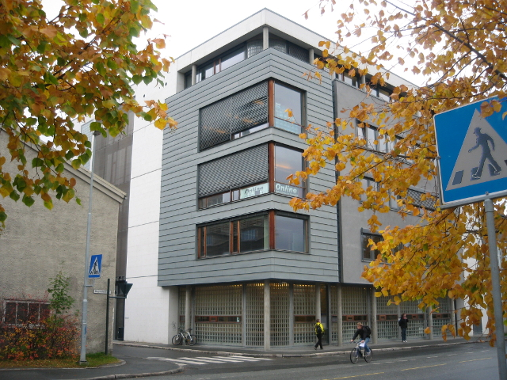

Høgskolenringen 3 (P15)
Bygget har uoffisielt overtatt navnet til parkeringsplassen som tidligere lå på tomten, «P-15». Også kjent under navnet Fraggleberget, da alle datasalene i bygningen er oppkalt etter figurer fra denne serien.
Bygget har uoffisielt overtatt navnet til parkeringsplassen som tidligere lå på tomten, «P-15». Også kjent under navnet Fraggleberget, da alle datasalene i bygningen er oppkalt etter figurer fra denne serien.